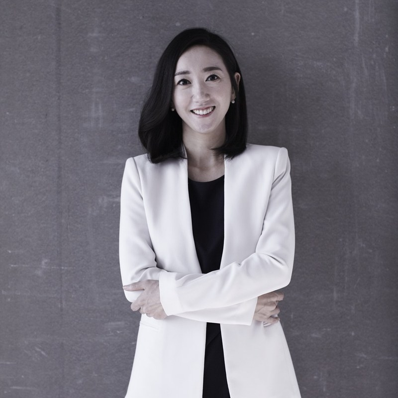

하지은
JIEUN HA
홈
연구실적
저서
강의실적
언론보도
문의
KO
EN

교육공학 · 성인학습 · 라이프 디자인
하지은
약력
Profile
관심 연구 분야
학력
주요 경력
주요 연구 실적
Research
연구실적 전체 보기
수상
Awards
강의 분야
Teaching
강의실적 전체 보기
도구
Instrument
문의
Contact
질문하기
무엇이든 물어보세요
About Jieun Ha
×
보내기